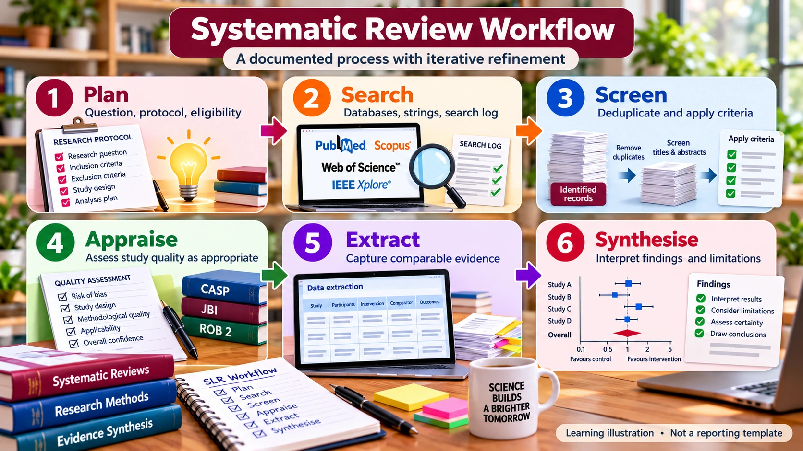

SLR FOUNDATIONS · PRE-HANDS-ON LEARNING
Complete SLR Journey
See how the stages fit together

From research problem to publication
Plan the review
Define rationale, objectives, eligibility criteria, protocol and planned synthesis.
Stage 1 — Literature Discovery
Develop RQs, keywords, database-specific search strings, search logs and initial article records.
Stage 2 — Screening & Appraisal
Deduplicate, screen records against eligibility criteria, assess full texts and appraise study quality when appropriate.
Stage 3 — Extraction & Synthesis
Extract relevant evidence, compare studies and answer each RQ with a justified synthesis.
Stage 4 — Manuscript Development
Write methods, results, discussion and limitations; check reporting and journal requirements.
The process is iterative: document protocol amendments and refinements. Do not silently overwrite search histories.
Explore Stage 1 →